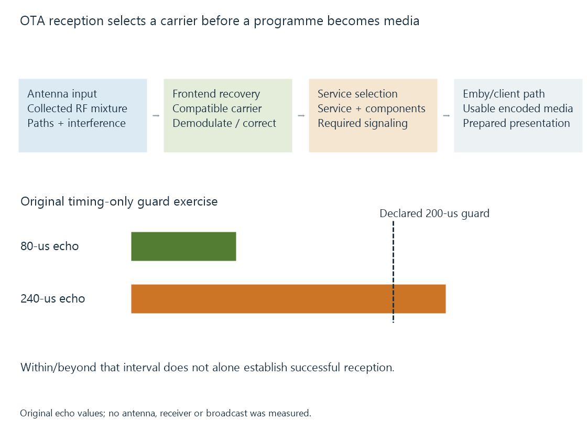

Over-the-air television
Over-the-air television carries broadcast signals through radio propagation to a compatible receiver, which recovers the selected services for playback.
Over-the-air television reaches a receiver through radio transmission. An antenna collects a mixture of signals; the tuner and demodulator select a compatible broadcast carrier and recover its data.
The receiver then identifies the television service and its media components. The antenna does not deliver a decoded movie directly to Emby.
One RF carrier can contain several services
A digital broadcast can multiplex several programmes into one carrier. The receiver tunes that carrier, while later processing selects the requested programme and component streams.
Broadcast multiplexes describes this sharing. A displayed channel number is another label, so “channel 7.1” need not mean that the receiver tunes physical RF channel 7.
The applicable regional delivery system also matters. ATSC, DVB-T/T2, ISDB-T and DTMB define different reception arrangements. A receiver supporting one is not made compatible with the others simply by attaching an antenna.

Reflections change the received signal
Radio energy can arrive through a direct path and reflected paths with different delay and amplitude. Some transmission arrangements provide a guard interval and receiver processing intended to handle delayed copies.
For an original timing exercise, assume an OFDM arrangement with a declared 200-microsecond guard interval:
| Model reflected-path delay | Relation to that declared interval |
|---|---|
| 80 μs | Within it |
| 240 μs | Beyond it |
The first comparison addresses timing only. It does not prove successful reception: amplitude, synchronization and the implemented receiver still matter.
The second illustrates why an echo can exceed the assumed timing protection. These are invented conditions, not a prediction for a particular transmitter or home.
DVB-T develops one guard-interval mechanism; other delivery systems need their own interpretation.
Acquisition and decoding have separate evidence
| Stage | Useful observation |
|---|---|
| RF/front end | Appropriate carrier and reception state |
| Demodulated output | Recovered data with its error/correction context |
| Service selection | Intended programme and component identifiers |
| Media decoding | Supported actual video/audio representation |
| Client presentation | Usable pictures and audio advance |
A frontend lock does not identify the video codec by itself. Nor does a decoder error prove that the RF signal is weak.
For Emby, the tuner/backend supplies the recovered media through its supported interface. Server/client preparation then follows the chosen playback route.
More RF power is not always more usable information
Noise, interference and receiver distortion affect whether symbols can be distinguished. A larger strength reading can coexist with worse digital recovery.
Signal strength measures a different property from signal quality. Their scales and time intervals should be read at the receiver that produced them.
When several services share a carrier, a reception problem can affect more than one of them at once. Their common RF acquisition is the useful relationship to investigate.
See Also
- ATSC 1.0 broadcast television
- DVB-T terrestrial television
- ISDB-T terrestrial television
- TV signal quality and decoding margin
- Broadcast multiplexes